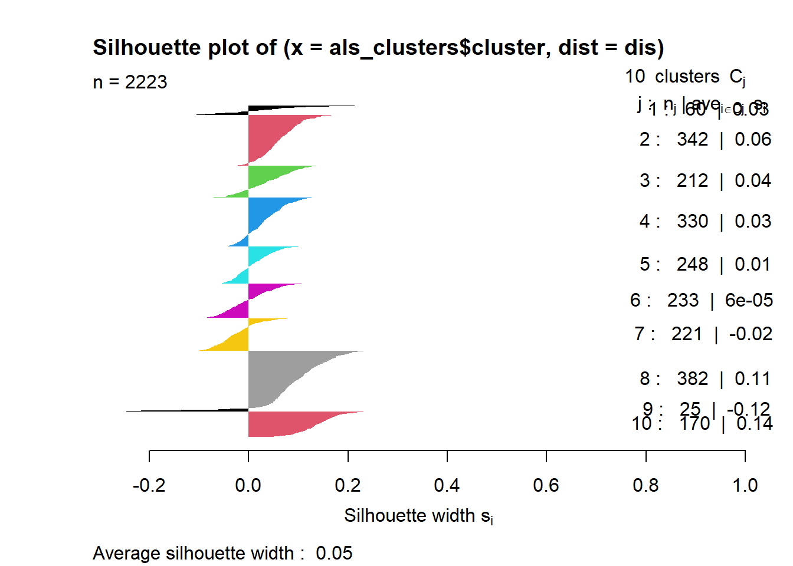

Homework 5
Data Science and Predictive Analytics (HS650), Fall 2021
Kevin Wu
November 2021
Homework_5_HS650_Fall_2021.Rmd.
- HW #5
- Fall 2021, DSPA (HS650)
- Name: Kevin Wu
- SID: ####0012 (last 4 digits only)
- UMich E-mail: kevinkwu@umich.edu
- I certify that the following paper represents my own independent work and conforms with the guidelines of academic honesty described in the UMich student handbook.
- Remember that students are allowed and encouraged to discuss, on a conceptual level, the problems with your class mates, however, this can not involve the exchange of actual code, printouts, solutions, e-mails or other explicit electronic or paper handouts.
library(plotly)
library(neuralnet)
library(stats)
library(cluster)
library(matrixStats)
library(cluster)
library(mclust)1 HW Problem 5.1 - Learning the Power Law
Design, train, and optimize a generic neural network (NN) that can learn and predict the power-function (Links to an external site.) for a given power parameter (λ∈R). Assess the accuracy of the NN prediction of the power function. [Hint: Recall the example with the square-root function (Links to an external site.).]
# generate random training data: 100 random data points randomly uniformnly distributed between -5 and 5 and power function of either -1, 2 or 3... any other power value does not seem to converge
rand_base <- runif(100, -5, 5)
set.seed(123)
rand_power <- sample(x=c(-1,2,3), size=1)
# create a 2 column data-frame (rand_base_data, power_data)
power_df <- data.frame(rand_base_data=rand_base, power_data=rand_base^rand_power)
# plot(power_df$rand_base_data, power_df$power_data)
plot_ly(power_df, x = ~rand_base_data, y = ~power_data, type="scatter", mode="markers") %>%
layout(title='Power Function',
xaxis = list(title="Input (x)"),
yaxis = list(title=paste0("Output (y=x^", rand_power ,")")),
legend = list(orientation = 'h'))set.seed(1234)
net_power <- neuralnet(power_data ~ rand_base_data, power_df, hidden=10, threshold=0.1)
plot(net_power, rep="best")
# generate testing data sequence (from=0.1, from -7 to 7 that goes 2 units beyond the training data).
test_base <- seq(-7, 7, 0.1)
test_power_data <- test_base^rand_power
test_data_df <- data.frame(rand_base_data=test_base, power_data=test_power_data)
pred_power <- predict(net_power, test_data_df)
# compares the predicted power function generated by the Neural Net Model with the actual power function
# it seems the neural net is underestimating the power function.
plot_ly(x = ~test_base, y = ~test_power_data, type="scatter", mode="lines", name="power") %>%
add_trace(x = ~test_base, y = ~pred_power, mode="markers", name="NN Model Prediction") %>%
layout(title='Predicted Neural Net Power Function vs. Actual Power Function',
xaxis = list(title="Inputs"),
yaxis = list(title="Outputs (y=power(x))"),
legend = list(orientation = 'h'))2 HW Problem 5.2 - ALS Clustering
Use the ALS dataset to study a rare but devastating progressive neurodegenerative disease, amyotrophic lateral sclerosis (ALS). Major clinically relevant questions include: What patient phenotypes can be automatically and reliably identified and used to predict the change of the ALSFRS slope over time?
pathname_ALS_small <- "https://umich.instructure.com/files/1789623/download?download_frd=1"
pathname_ALS_big <- "https://umich.instructure.com/files/1789624/download?download_frd=1"
als_df <- read.csv(pathname_ALS_big)
als_df <- als_df[-1]
# preliminary data summaries and visualizations
str(als_df)## 'data.frame': 2223 obs. of 100 variables:
## $ Age_mean : int 65 48 38 63 63 36 55 55 37 72 ...
## $ Albumin_max : num 57 45 50 47 47 51 46 45 48 44 ...
## $ Albumin_median : num 40.5 41 47 44 45.5 47 44 42 46 42 ...
## $ Albumin_min : num 38 39 45 41 42 46 40 38 41 38 ...
## $ Albumin_range : num 0.0662 0.01045 0.00893 0.01211 0.00829 ...
## $ ALSFRS_slope : num -0.966 -0.922 -0.915 -0.598 -0.444 ...
## $ ALSFRS_Total_max : int 30 37 24 30 32 37 34 30 35 28 ...
## $ ALSFRS_Total_median : num 28 33 14 29 27.5 34.5 24 27.5 28.5 25.5 ...
## $ ALSFRS_Total_min : int 22 21 10 24 20 27 10 20 24 23 ...
## $ ALSFRS_Total_range : num 0.0212 0.0287 0.025 0.015 0.0204 ...
## $ ALT.SGPT._max : num 24 25 25 62 38 34 80 38 47 39 ...
## $ ALT.SGPT._median : num 22 13 20 60 26.5 23 46 27 42 20 ...
## $ ALT.SGPT._min : num 18 8 14 41 22 18 19 15 25 11 ...
## $ ALT.SGPT._range : num 0.0209 0.0296 0.0196 0.0524 0.0265 ...
## $ AST.SGOT._max : int 31 31 24 46 35 31 57 26 43 49 ...
## $ AST.SGOT._median : num 27.5 17 19 40 26.5 26 37 25 30 24 ...
## $ AST.SGOT._min : num 23 14 18 33 20 21 22 16 24 17 ...
## $ AST.SGOT._range : num 0.0279 0.0296 0.0107 0.0324 0.0249 ...
## $ Bicarbonate_max : num 30 32 35 23 32 29 32 29 36 32 ...
## $ Bicarbonate_median : num 28 28 29 20 28 26 27.5 28 29 29.5 ...
## $ Bicarbonate_min : num 25 25 24 20 23 22 23 25 20 27 ...
## $ Bicarbonate_range : num 0.01742 0.0122 0.01964 0.00748 0.01493 ...
## $ Blood.Urea.Nitrogen..BUN._max : num 8.03 8.4 5.48 8.03 5.11 ...
## $ Blood.Urea.Nitrogen..BUN._median: num 7.12 4.75 4.38 8.03 4.2 ...
## $ Blood.Urea.Nitrogen..BUN._min : num 6.57 4.02 3.65 6.57 3.65 ...
## $ Blood.Urea.Nitrogen..BUN._range : num 0.00509 0.00763 0.00326 0.00364 0.00242 ...
## $ bp_diastolic_max : int 90 80 86 90 100 84 98 80 90 90 ...
## $ bp_diastolic_median : num 83 78 76 80 80 80 86 74 80 80 ...
## $ bp_diastolic_min : int 69 64 58 70 68 60 80 64 80 70 ...
## $ bp_diastolic_range : num 0.0556 0.0287 0.05 0.0499 0.0531 ...
## $ bp_systolic_max : int 160 140 120 150 160 140 134 134 135 140 ...
## $ bp_systolic_median : num 139 132 110 130 130 ...
## $ bp_systolic_min : int 129 104 90 120 104 100 110 104 115 120 ...
## $ bp_systolic_range : num 0.082 0.0646 0.0536 0.0748 0.0929 ...
## $ Calcium_max : num 2.5 2.32 2.47 2.47 2.42 ...
## $ Calcium_median : num 2.22 2.17 2.3 2.35 2.26 ...
## $ Calcium_min : num 2.22 2.02 2.2 2.23 2.17 ...
## $ Calcium_range : num 0.000956 0.000522 0.00049 0.000474 0.000414 ...
## $ Chloride_max : num 109 108 108 109 107 110 108 107 110 103 ...
## $ Chloride_median : num 108 102 106 107 104 105 104 106 105 99 ...
## $ Chloride_min : num 103 100 104 106 100 101 100 101 101 95 ...
## $ Chloride_range : num 0.02091 0.01394 0.00714 0.00748 0.01161 ...
## $ Creatinine_max : num 79.6 61.9 88.4 70.7 61.9 ...
## $ Creatinine_median : num 79.6 53 79.6 61.9 48.6 ...
## $ Creatinine_min : num 70.7 44.2 70.7 53 26.5 ...
## $ Creatinine_range : num 0.0308 0.0308 0.0316 0.0441 0.0586 ...
## $ Gender_mean : int 1 1 2 2 1 2 2 1 2 1 ...
## $ Glucose_max : num 7.44 6.77 5.66 5.11 7.49 ...
## $ Glucose_median : num 4.5 5 5.11 4.77 5.72 ...
## $ Glucose_min : num 4.22 4.05 4.22 4.66 5.05 ...
## $ Glucose_range : num 0.01122 0.00474 0.00258 0.00111 0.00405 ...
## $ hands_max : int 8 8 4 6 8 8 6 8 6 8 ...
## $ hands_median : num 7.5 6 1 5.5 6.5 7 4 8 1.5 7 ...
## $ hands_min : int 6 6 0 4 3 5 1 5 0 6 ...
## $ hands_range : num 0.00529 0.00359 0.00714 0.00499 0.00849 ...
## $ Hematocrit_max : num 44.6 41.9 49.1 46.3 44 46.8 50.5 45.5 48 42 ...
## $ Hematocrit_median : num 43.1 39.6 46.2 43 42.9 ...
## $ Hematocrit_min : num 40.7 37.7 44 41.7 39.5 41.9 44.1 37.1 45 38 ...
## $ Hematocrit_range : num 0.01359 0.00732 0.00911 0.01147 0.00746 ...
## $ Hemoglobin_max : num 156 138 161 154 152 157 165 152 156 139 ...
## $ Hemoglobin_median : num 146 132 154 145 146 ...
## $ Hemoglobin_min : num 143 128 151 144 138 142 151 122 149 125 ...
## $ Hemoglobin_range : num 0.0453 0.0174 0.0179 0.0249 0.0232 ...
## $ leg_max : int 8 8 4 4 2 8 8 1 8 1 ...
## $ leg_median : num 6.5 7.5 3 3.5 2 8 6 0.5 8 0 ...
## $ leg_min : int 4 3 2 2 0 4 4 0 5 0 ...
## $ leg_range : num 0.01058 0.00898 0.00357 0.00499 0.0034 ...
## $ mouth_max : int 5 9 10 12 12 9 10 12 12 12 ...
## $ mouth_median : num 3.5 8 7 12 12 8 6 12 12 12 ...
## $ mouth_min : int 0 4 4 12 12 7 0 10 12 11 ...
## $ mouth_range : num 0.01323 0.00898 0.01071 0 0 ...
## $ onset_delta_mean : int -1023 -341 -1181 -365 -1768 -334 -268 -763 -440 -1324 ...
## $ onset_site_mean : int 1 1 1 2 2 1 2 2 2 2 ...
## $ Platelets_max : int 172 286 233 275 313 220 245 487 149 378 ...
## $ Platelets_median : num 169 264 213 233 284 ...
## $ Platelets_min : num 152 230 167 204 268 178 191 212 109 281 ...
## $ Potassium_max : num 4.5 5 4.1 4.3 4.6 4.5 4.5 4.7 4.6 4.4 ...
## $ Potassium_median : num 4.25 4.3 4 4.2 3.75 4.3 4.1 4.5 4.3 3.7 ...
## $ Potassium_min : num 4 3.9 3.9 4 3.5 4.2 3.6 4.2 4 3.2 ...
## $ Potassium_range : num 0.001742 0.001916 0.000357 0.000748 0.001824 ...
## $ pulse_max : int 79 90 82 84 101 88 96 100 84 100 ...
## $ pulse_median : num 68 76 73 72 96 66 80 80 68 100 ...
## $ pulse_min : int 61 64 60 68 74 60 66 64 59 80 ...
## $ pulse_range : num 0.0476 0.0467 0.0393 0.0399 0.0448 ...
## $ respiratory_max : int 4 4 4 3 4 4 4 4 4 4 ...
## $ respiratory_median : num 3 4 4 3 4 4 3 4 4 4 ...
## $ respiratory_min : int 3 3 4 3 3 3 2 1 4 4 ...
## $ respiratory_range : num 0.00265 0.0018 0 0 0.0017 ...
## $ Sodium_max : num 148 142 145 143 143 145 145 145 146 147 ...
## $ Sodium_median : num 146 138 143 139 140 ...
## $ Sodium_min : num 143 136 140 138 138 137 136 139 138 132 ...
## $ Sodium_range : num 0.01742 0.01045 0.00893 0.01247 0.00829 ...
## $ SubjectID : int 533 649 1234 2492 2956 3085 3551 3971 4390 4772 ...
## $ trunk_max : int 8 8 5 5 6 8 7 5 6 3 ...
## $ trunk_median : num 7 7 0 5 4 8 5 3 3 3 ...
## $ trunk_min : int 7 5 0 3 1 7 2 2 2 1 ...
## $ trunk_range : num 0.00265 0.00539 0.00893 0.00499 0.00849 ...
## $ Urine.Ph_max : num 6 7 6 7 6 8 9 6 7 7 ...
## $ Urine.Ph_median : num 6 5 5 6 5 6 5 6 6 6 ...
## [list output truncated]plot_ly() %>%
add_trace(x = ~als_df$hands_median, name="hands_median", type="box") %>%
add_trace(x = ~als_df$leg_median, name="leg_median", type="box") %>%
layout(title="Median Leg and Hands",
xaxis=list(title="Medians"))plot_ly() %>%
add_trace(x = ~als_df$ALSFRS_Total_median, type="histogram") %>%
layout(title="Histogram of Median ALSFRS Score",
xaxis=list(title="ALSFRS Median Score"), bargap=0.1)# started with sqrt(2200 / 2) which is roughly 33, however it is clear that k being 33 is suboptimal
als_df_z <- as.data.frame(lapply(als_df, scale))
set_silhouette <- function(df, k) {
set.seed(123)
clusters <- kmeans(df, k)
silhouette(clusters$cluster, dist(df))
}
sil <- set_silhouette(als_df_z, 33)
summary(sil)## Silhouette of 2223 units in 33 clusters from silhouette.default(x = clusters$cluster, dist = dist(df)) :
## Cluster sizes and average silhouette widths:
## 11 95 75 92 90 93
## -0.069883962 0.029838817 0.008047063 0.032610137 0.010133704 0.002999339
## 98 141 8 34 87 17
## 0.002958687 0.097002790 0.091659963 0.061559335 0.026537483 0.068945043
## 30 70 129 68 51 72
## 0.012875313 -0.010208482 0.086796871 -0.025050485 0.017169094 0.142920853
## 50 56 72 47 30 88
## 0.017720295 -0.024336209 -0.010423774 -0.026844179 0.066663304 0.038756178
## 43 74 19 91 19 104
## 0.002513713 0.056831278 -0.104706887 0.032621825 -0.118031394 0.031684863
## 80 121 68
## -0.002108364 0.080426538 0.030743465
## Individual silhouette widths:
## Min. 1st Qu. Median Mean 3rd Qu. Max.
## -0.31107 -0.01190 0.02989 0.03076 0.06934 0.31935# mean width being 0.03 k needs to be smaller. let's optimize for k.
sil <- set_silhouette(als_df_z, 28)
summary(sil)## Silhouette of 2223 units in 28 clusters from silhouette.default(x = clusters$cluster, dist = dist(df)) :
## Cluster sizes and average silhouette widths:
## 11 128 79 105 97 7
## -0.066812639 0.027854443 0.006379296 0.019476373 0.019960102 -0.027892023
## 83 186 9 33 132 17
## -0.040022406 0.084860123 -0.078098219 0.066279875 0.005129040 0.073885769
## 30 101 85 101 78 70
## 0.026675866 -0.010154884 0.019503024 -0.017707873 0.004898586 0.143940112
## 76 47 145 90 34 95
## 0.005117277 -0.047341162 0.074325891 -0.001694217 0.059719129 0.047549168
## 126 75 13 170
## 0.021720667 0.063612850 0.036596890 0.092782703
## Individual silhouette widths:
## Min. 1st Qu. Median Mean 3rd Qu. Max.
## -0.29607 -0.01143 0.02956 0.03248 0.07467 0.25427sil <- set_silhouette(als_df_z, 23)
summary(sil)## Silhouette of 2223 units in 23 clusters from silhouette.default(x = clusters$cluster, dist = dist(df)) :
## Cluster sizes and average silhouette widths:
## 11 148 140 109 134 18
## -0.063066443 0.060044963 0.036941534 0.012774946 0.001492658 -0.043558385
## 101 177 9 94 105 18
## 0.006972678 0.063312086 -0.075115443 0.075222298 0.009775497 -0.165322013
## 30 130 179 115 88 86
## 0.034402625 -0.007765283 0.084320887 -0.008254083 0.003255709 0.122567566
## 111 90 162 133 35
## -0.007567434 -0.020307978 0.045595882 0.028077293 0.053267705
## Individual silhouette widths:
## Min. 1st Qu. Median Mean 3rd Qu. Max.
## -0.295753 -0.007502 0.028478 0.029618 0.067895 0.232386sil <- set_silhouette(als_df_z, 18)
summary(sil)## Silhouette of 2223 units in 18 clusters from silhouette.default(x = clusters$cluster, dist = dist(df)) :
## Cluster sizes and average silhouette widths:
## 35 176 190 137 189 24
## 0.016407533 0.004936332 0.028572314 0.051059077 0.006442523 -0.156162614
## 193 250 9 88 172 147
## 0.086309455 0.072545953 -0.069787091 0.058020119 -0.002793345 0.003833464
## 33 163 201 105 18 93
## 0.045979719 0.008061244 0.063230120 -0.033739949 -0.041353150 0.142266999
## Individual silhouette widths:
## Min. 1st Qu. Median Mean 3rd Qu. Max.
## -0.288899 -0.007539 0.031060 0.033817 0.076339 0.245710sil <- set_silhouette(als_df_z, 13)
summary(sil)## Silhouette of 2223 units in 13 clusters from silhouette.default(x = clusters$cluster, dist = dist(df)) :
## Cluster sizes and average silhouette widths:
## 56 240 198 8 195 207
## 0.019155174 0.060315625 0.045104538 0.100852127 0.008656306 -0.011293170
## 283 316 21 168 216 124
## 0.064112311 0.093305398 -0.106422403 0.129874756 -0.010650624 -0.033070080
## 191
## 0.023433804
## Individual silhouette widths:
## Min. 1st Qu. Median Mean 3rd Qu. Max.
## -0.272582 -0.005588 0.040636 0.040451 0.086068 0.327990# with k <- 8 now we have a drop in the mean width from 0.040451 to 0.040341
sil <- set_silhouette(als_df_z, 8)
summary(sil)## Silhouette of 2223 units in 8 clusters from silhouette.default(x = clusters$cluster, dist = dist(df)) :
## Cluster sizes and average silhouette widths:
## 65 287 243 420 414 26
## 0.03226049 0.02166239 0.03686525 0.04884860 0.04352598 -0.11710974
## 285 483
## -0.02243215 0.08966359
## Individual silhouette widths:
## Min. 1st Qu. Median Mean 3rd Qu. Max.
## -0.315106 0.003128 0.042598 0.040341 0.077302 0.211349# with k <- 10 we have a better improvement 0.045682, better than k <- 8 and k <- 13. k <- 10 seems good enough
sil <- set_silhouette(als_df_z, 10)
summary(sil)## Silhouette of 2223 units in 10 clusters from silhouette.default(x = clusters$cluster, dist = dist(df)) :
## Cluster sizes and average silhouette widths:
## 60 342 212 330 248
## 2.779496e-02 6.446395e-02 3.965608e-02 3.315300e-02 1.065047e-02
## 233 221 382 25 170
## 5.977882e-05 -2.471885e-02 1.063137e-01 -1.158307e-01 1.387071e-01
## Individual silhouette widths:
## Min. 1st Qu. Median Mean 3rd Qu. Max.
## -0.314057 -0.002881 0.045220 0.045682 0.089731 0.231418# let's plot the silhouettes where k <- 10
set.seed(123)
als_clusters <- kmeans(als_df_z, 10)
dis <- dist(als_df_z)
sil <- silhouette(als_clusters$cluster, dis)
plot(sil, col=c(1:length(als_clusters$centers[ ,1])), border=NA)
factoextra::fviz_silhouette(sil, label=T, palette = "jco", ggtheme = theme_classic())## cluster size ave.sil.width
## 1 1 60 0.03
## 2 2 342 0.06
## 3 3 212 0.04
## 4 4 330 0.03
## 5 5 248 0.01
## 6 6 233 0.00
## 7 7 221 -0.02
## 8 8 382 0.11
## 9 9 25 -0.12
## 10 10 170 0.14# Clusters 8 and 10 are the most homogeneous with average widths a little over 0.1. not great.
# Cluster 8 - ALSFRS, respirations, hands, mouth, trunk, and leg median / min / max scores as previously shown as well as is the 2nd most average wide cluster with width 0.11... all related to ALS and muscle movement understandable. Also understandable is creatinine which is related to muscle breakdown -
# Cluster 10 - 0.14
df <- as.data.frame(t(als_clusters$centers))
rowNames <- rownames(df)
colnames(df) <- paste0("Cluster",c(1:10))
plot_ly(df, x = rownames(df), y = ~Cluster1, type = 'bar', name = 'Cluster1') %>%
add_trace(y = ~Cluster2, name = 'Cluster2') %>%
add_trace(y = ~Cluster3, name = 'Cluster3') %>%
add_trace(y = ~Cluster4, name = 'Cluster4') %>%
add_trace(y = ~Cluster5, name = 'Cluster5') %>%
add_trace(y = ~Cluster6, name = 'Cluster6') %>%
add_trace(y = ~Cluster7, name = 'Cluster7') %>%
add_trace(y = ~Cluster8, name = 'Cluster8') %>%
add_trace(y = ~Cluster9, name = 'Cluster9') %>%
add_trace(y = ~Cluster10, name = 'Cluster10') %>%
layout(title="Explicating Derived Cluster Labels",
yaxis = list(title = 'Cluster Centers'), barmode = 'group')kpp_init = function(dat, K) {
x = as.matrix(dat)
n = nrow(x)
# Randomly choose a first center
centers = matrix(NA, nrow=K, ncol=ncol(x))
set.seed(123)
centers[1,] = as.matrix(x[sample(1:n, 1),])
for (k in 2:K) {
# Calculate dist^2 to closest center for each point
dists = matrix(NA, nrow=n, ncol=k-1)
for (j in 1:(k-1)) {
temp = sweep(x, 2, centers[j,], '-')
dists[,j] = rowSums(temp^2)
}
dists = rowMins(dists)
# Draw next center with probability proportional to dist^2
cumdists = cumsum(dists)
prop = runif(1, min=0, max=cumdists[n])
centers[k,] = as.matrix(x[min(which(cumdists > prop)),])
}
return(centers)
}
set.seed(123)
n_rows <- 10
# it appears k-means++ appears to have done worse with the same number of k <- 10. 0.04 vs 0.05
clust_kpp = kmeans(als_df_z, kpp_init(als_df_z, n_rows), iter.max=100, algorithm='Lloyd')
sil2 = silhouette(clust_kpp$cluster, dis)
summary(sil2)## Silhouette of 2223 units in 10 clusters from silhouette.default(x = clust_kpp$cluster, dist = dis) :
## Cluster sizes and average silhouette widths:
## 62 233 212 318 22 219
## 0.01678383 -0.03251728 -0.04401025 0.07704941 -0.09037979 0.02877981
## 341 261 386 169
## 0.03451560 0.02245688 0.11053128 0.13753281
## Individual silhouette widths:
## Min. 1st Qu. Median Mean 3rd Qu. Max.
## -0.277621 -0.007502 0.042348 0.043405 0.092192 0.239696plot(sil2, col=c(1:length(clust_kpp$centers[ ,1])), border=NA)
# looks like the elbow point is k <- 6
mat = matrix(0, nrow = n_rows)
for (i in 2:n_rows){
set.seed(123)
clust_kpp = kmeans(als_df_z, kpp_init(als_df_z, i), iter.max=100, algorithm='Lloyd')
sil = silhouette(clust_kpp$cluster, dis)
mat[i] = mean(as.matrix(sil)[,3])
}
mat## [,1]
## [1,] 0.00000000
## [2,] 0.07794927
## [3,] 0.07751384
## [4,] 0.06545854
## [5,] 0.06106476
## [6,] 0.04587238
## [7,] 0.04697153
## [8,] 0.04373212
## [9,] 0.03785380
## [10,] 0.04340496df <- data.frame(k = 2:n_rows, sil = mat[2:n_rows])
plot_ly(df, x = ~k, y = ~sil, type = 'scatter', mode = 'lines', name='Silhouette') %>%
layout(title="Average Silhouette Graph")# appears to perform just as good as kmeans 0.05, but a smaller k which is better as it arranges the clusters in a more homogneously
K <- 6
set.seed(123)
clust_kpp2 = kmeans(als_df_z, kpp_init(als_df_z, K), iter.max=100, algorithm="MacQueen")
sil3 = silhouette(clust_kpp2$cluster, dis)
summary(sil3)## Silhouette of 2223 units in 6 clusters from silhouette.default(x = clust_kpp2$cluster, dist = dis) :
## Cluster sizes and average silhouette widths:
## 64 652 240 513 330 424
## 0.04212021 0.11433644 -0.09971799 0.06123967 0.02449348 0.02119666
## Individual silhouette widths:
## Min. 1st Qu. Median Mean 3rd Qu. Max.
## -0.183550 -0.001623 0.053390 0.045793 0.098887 0.239772plot(sil3, col=c(1:length(clust_kpp2$centers[ ,1])), border=NA)
# explicated 6 clusters optimized - interpret the results!!!
#
#
df <- as.data.frame(t(clust_kpp$centers))
rowNames <- rownames(df)
colnames(df) <- paste0("Cluster",c(1:K))
plot_ly(df, x = rownames(df), y = ~Cluster1, type = 'bar', name = 'Cluster1') %>%
add_trace(y = ~Cluster2, name = 'Cluster2') %>%
add_trace(y = ~Cluster3, name = 'Cluster3') %>%
add_trace(y = ~Cluster4, name = 'Cluster4') %>%
add_trace(y = ~Cluster5, name = 'Cluster5') %>%
add_trace(y = ~Cluster6, name = 'Cluster6') %>%
layout(title="Explicating Derived Cluster Labels",
yaxis = list(title = 'Cluster Centers'), barmode = 'group')# as noted by the plots, single linkage with 0.57 is most successful... for some reason the graphs aren't plotting
als_sing = agnes(als_df_z, diss=FALSE, method='single')
als_comp = agnes(als_df_z, diss=FALSE, method='complete')
als_ward = agnes(als_df_z, diss=FALSE, method='ward')
sil_sing = silhouette(cutree(als_sing, k=K), dis)
sil_comp = silhouette(cutree(als_comp, k=K), dis)
sil_ward = silhouette(cutree(als_ward, k=9), dis)
plot(sil_sing, col=1:length(unique(sil_sing[,1])))plot(sil_comp, col=1:length(unique(sil_comp[,1])))plot(sil_ward, col=1:length(unique(sil_ward[,1]))) ## HW Problem 5.2b - Gaussian Mixture Model
## HW Problem 5.2b - Gaussian Mixture Model
Fit a Gaussian mixture model, select the optimal model, report BIC, and display density and classification plots Compare the result of the above methods
# Gaussioan mixture models
set.seed(123)
als_clinical_df <- als_df_z[c(6, 7, 8, 10, 24, 25, 26, 28, 32, 36, 40, 44, 49, 61, 65, 66, 67, 69, 72, 73, 90, 94, 95)]
str(als_clinical_df)## 'data.frame': 2223 obs. of 23 variables:
## $ ALSFRS_slope : num -0.381 -0.311 -0.3 0.209 0.457 ...
## $ ALSFRS_Total_max : num -0.3184 0.9988 -1.4475 -0.3184 0.0579 ...
## $ ALSFRS_Total_median : num 0.1349 0.8887 -1.9755 0.2857 0.0596 ...
## $ ALSFRS_Total_range : num -0.3015 0.1665 -0.0641 -0.6854 -0.3505 ...
## $ Blood.Urea.Nitrogen..BUN._median: num 1.169 -0.608 -0.881 1.853 -1.018 ...
## $ Blood.Urea.Nitrogen..BUN._min : num 1.78 -0.107 -0.376 1.78 -0.376 ...
## $ Blood.Urea.Nitrogen..BUN._range : num -0.4031 0.0986 -0.7638 -0.6884 -0.9291 ...
## $ bp_diastolic_median : num 0.26 -0.43 -0.706 -0.154 -0.154 ...
## $ bp_systolic_median : num 0.7747 0.2402 -1.61 0.0346 0.0346 ...
## $ Calcium_median : num -1.41412 -1.97849 -0.56757 -0.00321 -0.99085 ...
## $ Chloride_median : num 1.938 -0.631 1.082 1.51 0.225 ...
## $ Creatinine_median : num 0.828 -0.7 0.828 -0.191 -0.955 ...
## $ Glucose_median : num -0.797 -0.396 -0.306 -0.574 0.184 ...
## $ Hemoglobin_median : num 0.1475 -1.0591 0.8369 0.0613 0.1906 ...
## $ leg_median : num 1.074 1.513 -0.46 -0.241 -0.899 ...
## $ leg_min : num 0.709 0.238 -0.232 -0.232 -1.174 ...
## $ leg_range : num 1.011 0.644 -0.593 -0.269 -0.633 ...
## $ mouth_median : num -2.238 -0.615 -0.975 0.829 0.829 ...
## $ onset_delta_mean : num -0.826 0.83 -1.209 0.772 -2.635 ...
## $ onset_site_mean : num -1.91 -1.91 -1.91 0.475 0.475 ...
## $ Sodium_median : num 2.9917 -1.1985 1.5949 -0.6398 -0.0812 ...
## $ trunk_max : num 1.028 1.028 -0.689 -0.689 -0.117 ...
## $ trunk_median : num 0.9816 0.9816 -2.2802 0.0497 -0.4163 ...gmm_clust <- Mclust(als_clinical_df)
# Thus the optimal model name is EEV
gmm_clust$modelName## [1] "EEV"gmm_clust$BIC## Bayesian Information Criterion (BIC):
## EII VII EEI VEI EVI VVI EEE
## 1 -145259.8 -145259.8 -145429.3 -145429.3 -145429.3 -145429.3 -114642.6
## 2 -140216.6 -139851.4 -138323.4 -138216.9 NA NA -109848.7
## 3 -137603.2 -136845.0 -133209.4 -132250.5 NA NA -109673.5
## 4 -136211.9 -135176.1 -131104.2 NA NA NA -108785.6
## 5 -134959.4 -133528.4 -129952.4 NA NA NA -108600.4
## 6 -134516.8 -132408.7 -127637.0 NA NA NA -108418.3
## 7 -134035.3 -131684.0 -126353.0 NA NA NA NA
## 8 -132894.8 -131114.1 -125799.0 NA NA NA NA
## 9 -132455.2 -130742.0 -125223.3 NA NA NA NA
## VEE EVE VVE EEV VEV EVV VVV
## 1 -114642.6 -114642.6 -114642.6 -114642.62 -114642.6 -114642.6 -114642.6
## 2 -111999.6 NA NA -107233.41 -105174.7 NA NA
## 3 NA NA NA -98415.93 NA NA NA
## 4 NA NA NA NA NA NA NA
## 5 NA NA NA NA NA NA NA
## 6 NA NA NA NA NA NA NA
## 7 NA NA NA NA NA NA NA
## 8 NA NA NA NA NA NA NA
## 9 NA NA NA NA NA NA NA
##
## Top 3 models based on the BIC criterion:
## EEV,3 VEV,2 EEV,2
## -98415.93 -105174.66 -107233.41# Below are the 3 components
plot(gmm_clust$BIC, legendArgs = list(x = "bottom", ncol = 2, cex = 1))
plot(gmm_clust, what = "density")
plot(gmm_clust, what = "classification")